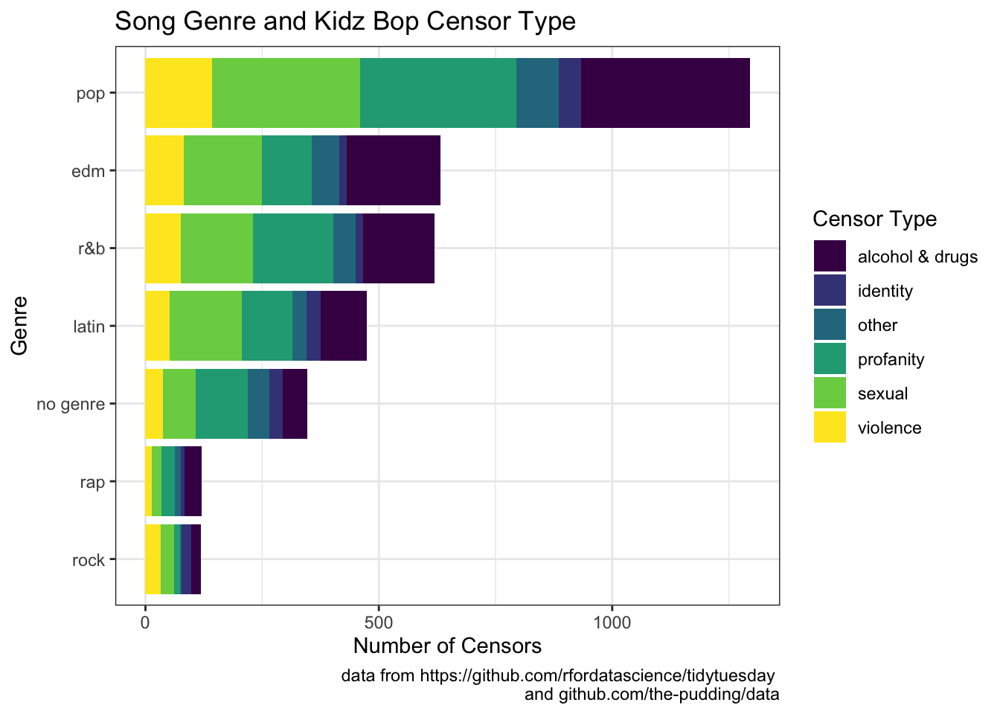
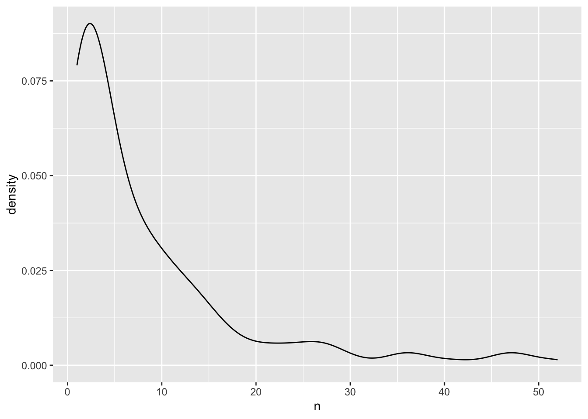

library(tidyverse)
library(rvest)
library(httr)
library(readr)Mini Project 3
Intro
In this mini project I am using string data, stringr functions, and regular expressions that we have been working with for a bit in class. I chose two data sets, KB_censored_lyrics and bigspotify, to learn more about Kidz Bop censoring tactics. On this page I will present three graphs that help to tell a story about the data I am using. The two data sets used for this project are from the github repositories, the pudding (Kidz Bop data) and tidytuesday (Spotify data).
Problem!!
My link for the pudding doesn't work, not sure how to get it to. Libraries and Data
bigspotify <- readr::read_csv('https://raw.githubusercontent.com/rfordatascience/tidytuesday/master/data/2020/2020-01-21/spotify_songs.csv')
KB_censored_lyrics <- read_csv("KB_censored-lyrics.csv")Data Wrangling
new_spot <- bigspotify |>
mutate(year = str_replace(track_album_release_date, "(\\d{4})-(\\d{2})-(\\d{2})", "\\1"),
songName = str_to_lower(track_name))
#making a new data set that changes release date to only year and changing
#name and case of track_name from the spotify data setkb_plus_spotify <- KB_censored_lyrics |>
left_join(new_spot, join_by(songName == songName))
#joining the kids bop and spotify datacensor_type_and_genre <- KB_censored_lyrics |>
left_join(new_spot, join_by(songName == songName), relationship = "many-to-many") |>
mutate(genre= ifelse(is.na(playlist_genre), "no genre", playlist_genre)) |>
group_by(genre, category) |>
summarize(n = n())
#create a new dataset that has the vectors playlist_genre,
#category (of censor type), and number of times that particular censor
#happens within the genreGraph 1
censor_type_and_genre |>
ggplot(aes(x = n, y = reorder(genre, n),
fill = category)) +
geom_col() +
labs(title = "Song Genre and Kidz Bop Censor Type",
x = "Number of Censors",
y = "Genre",
fill = "Censor Type",
caption = "data from https://github.com/rfordatascience/tidytuesday
and github.com/the-pudding/data") +
scale_fill_ordinal() +
theme_bw()
This graph plots censor number and type from Kidz Bop songs grouped by genre. From this graph we can learn about the different genres of music that Kidz Bop censors, and the different censor types used by each genre. We can see that the most common song that Kidz Bop creates censored versions of is pop, followed by edm, r&b, latin, music that has no genre classification, rock, and lastly rap. This tells us about the kind of music that kids are interested in hearing because Kidz Bop would only censor and produce music that will do well with their target audience. From this graph we can also learn about the different types of censors that happen most in each genre type. For example in the pop genre we can see that alcohol & drugs is the most common censor type and the least common is identity.
Problem!!
If you’re curious about the specific values of the variables represented in the graph I’ve created a tibble below with these numbers. if you have time actually make this 6 tibbles with the different genres
tibble(censor_type_and_genre) |>
mutate("Playlist Genre" = genre,
"Censor Type" = category,
"Number of Censors" = n) |>
select(-genre, -category, -n) # A tibble: 42 × 3
`Playlist Genre` `Censor Type` `Number of Censors`
<chr> <chr> <int>
1 edm alcohol & drugs 201
2 edm identity 15
3 edm other 60
4 edm profanity 107
5 edm sexual 167
6 edm violence 82
7 latin alcohol & drugs 98
8 latin identity 31
9 latin other 30
10 latin profanity 109
# ℹ 32 more rows#creates a tibble that shows the data used for the bar chart below
#This tibble gives information about specific numbers of censors of each
#type and genreGraph 2
censor_type_and_genre |>
ggplot() +
geom_bar(aes(x = genre, y = n,
fill = category), position = "fill", stat = "identity") +
labs(title = "Song Genre and Kidz Bop Censor Type",
x = "Genre",
y = "Proportion of Censor Type",
fill = "Censor Type",
caption = "data from https://raw.githubusercontent.com/rfordatascience/tidytuesday/master/data/2020/2020-01-21/spotify_songs.csv
and github.com/the-pudding/data") +
scale_fill_ordinal() +
theme_bw()
This graph shows the proportion of each genre than a single censor type represents. From this graph we can make inferences about what kinds of censors are more or less common within the different genres of music that Kidz Bop remixes. For example we can see that, proportionally, rock music has a lot more violence censors than other music genres, even though it doesn’t have as many censors total. The importance of this graph is to show more comparative data with respect to the censor type than the other bar chart above.
Graph 3
songs <- KB_censored_lyrics |>
distinct(songName)
str_view(songs$songName, "\\d+") [1] │ <7> rings
[15] │ i gotta feeling - <1461400>
[46] │ <1985>
[49] │ <24>k magic
[91] │ perfect (<2017>)
[179] │ <7> years
[182] │ <4> minutesKB_censored_lyrics |>
count(ogArtist) |>
arrange(n) |>
summarize(mean_songs = mean(n),
max_songs = max(n),
min_songs = min(n),
sd_songs = sd(n),
med_songs = median(n)) # A tibble: 1 × 5
mean_songs max_songs min_songs sd_songs med_songs
<dbl> <int> <int> <dbl> <dbl>
1 8.46 52 1 10.3 4 # ggplot(aes(x = n)) +
# geom_boxplot()KB_censored_lyrics |>
count(ogArtist) |>
arrange(n) |>
ggplot(aes(x = n)) +
geom_boxplot()#prolly notKB_censored_lyrics |>
count(ogArtist) |>
arrange(n) |>
ggplot(aes(x = n, y = ogArtist)) +
geom_point()
#prolly notKB_censored_lyrics |>
count(ogArtist) |>
arrange(n) |>
ggplot(aes(x = n)) +
geom_density()
#attention